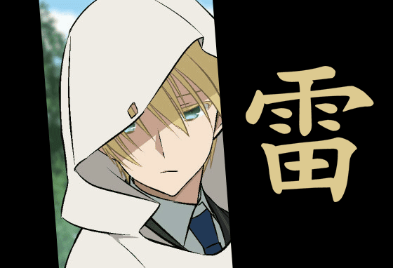

Psyché
Sous le calme d’un garçon distrait, une volonté qui se construit à l’épreuve de la perte.
Entre douceur
et obstination.
Rai est un jeune homme attentif aux petites choses, souvent perdu dans ses pensées et capable de poursuivre les idées les plus improbables avec une obstination désarmante. Les autres le trouvent parfois étrange ; lui trouve surtout que le monde manque un peu d’imagination.
Il n’a jamais été naturellement à l’aise au milieu des groupes. Son humour discret lui permet néanmoins de créer des liens, et sa gentillesse se manifeste davantage dans ce qu’il fait pour les autres que dans de grandes déclarations.
Il éprouve un attachement très fort à ceux qui lui témoignent de l’affection. La disparition de Mémé Turbo l’a rendu sensible aux séparations et à l’idée d’arriver trop tard. Il lui arrive de masquer cette peur derrière une remarque légère.
Sa colère envers les démons n’a pas disparu. Il s’efforce de ne pas lui laisser décider à sa place. C’est l’une des leçons les plus difficiles que lui a enseignées Izanagi : sauver une vie vaut davantage que remporter une victoire spectaculaire.

Qualités
Empathique, consciencieux lorsqu'une vie est en jeu, loyal, persévérant, capable d'autodérision et ouvert à l'apprentissage.
Failles
Difficulté à s'intégrer, tendance à se culpabiliser après un échec, peur de perdre à nouveau un proche, impulsivité lorsqu'il est blessé émotionnellement.
Convictions
Protéger avant de vaincre. Ne pas laisser la peur ou la haine dicter un combat. Avancer même lorsqu'il est impossible d'éviter la pluie.
Rapport au nom Netero
Rai admire la légende de Beyond, sans chercher désormais à reproduire ses exploits. Il commence à comprendre qu'honorer un héritage ne signifie pas vivre à la place d'un autre.
Rituels et petites manies
Il observe encore les averses, se rappelle parfois son ancien jeu consistant à esquiver les gouttes et s’arrête volontiers acheter des beignets lorsqu’une échoppe lui évoque sa grand-mère. Il lui arrive d’en acheter deux, par pure habitude.
Thème musical
Izanami · Kirin